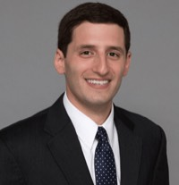

Press freedom & journalists at risk
Reporters jailed, attacked, killed or sued.
0 films · 10 sessions · 30 people
Often together with: Legal & safety for reportersWhistleblowers & leaksPublic records & FOIASurveillance & privacyMigration & bordersCriminal justice & prisons
Films
- None.
Sessions
- 2026 · Fri Nov 6 · 9:30amPanelRights from the Ground UpAnnie Sundberg, Will Thwaites, James McLaughlin, Seth Stern
- 2025 · Sat Nov 1 · 10:00amWorkshopBulletproof Your FilmEric Feder
- 2025 · Sat Nov 1 · 10:00 AMWorkshopWorkshop: Bulletproof Your FilmEric Feder
- 2025 · Sat Nov 1 · 11:30 AMWorkshopWorkshop: Pro Bono Legal Clinic for Investigative StorytellersAzeezat Adeleke, Chelsea Kelly, Eric Feder, Sig Libowitz, Mary Inman
- 2022 · Fri Oct 14 · 1:00 PMConversation · DX²Lunchtime Conversation: Reading the Supreme Court on Freedom of the PressMax Mishkin, Jennifer Nelson, Alison Schary
- 2021 · Thu Oct 14 · 11:15amPanelPro Bono Legal ClinicLoralee Sundra, Diana Palacios, Chuck Tobin, Theodore Frank, Sarah Matthews
- 2021 · Wed Oct 13 · 1:00pmPanelThe Chilling Effect of Libel Defamation CostsLynn Oberlander, Lynn D. Carrillo, Kelli L. Sager, Dale Cohen, Jesse Einstein
- 2019 · Sat Oct 12 · 10:00 AMWorkshopPro Bono Legal ClinicAlexia Bedat, Edward Baker, Lisa Zycherman, Theodore Frank
- 2018 · Sat Oct 13 · 10:15 AMEventPro Bono Legal ClinicTheodore Frank, Edward Klaris, Sarah Matthews, Lisa Zycherman
- 2017 · Sat Oct 21 · 9:30 AMEventPro Bono Legal Clinic for Visual StorytellersTheodore Frank, Laura Handman, Ed Klaris, Jesselyn Radack, Katie Townsend
People most involved
 Theodore FrankPanelist, festival team, workshop leader · 7 editions, 2017–2025Arnold & Porter Kaye Scholer (retired partner)
Theodore FrankPanelist, festival team, workshop leader · 7 editions, 2017–2025Arnold & Porter Kaye Scholer (retired partner)- Eric FederPanelist, workshop leader · 2 editions, 2023–2025Reporters Committee for Freedom of the Press

 Lisa ZychermanPanelist, workshop leader · 4 editions, 2018–2023Reporters Committee for Freedom of the Press
Lisa ZychermanPanelist, workshop leader · 4 editions, 2018–2023Reporters Committee for Freedom of the Press- Jesselyn RadackPanelist · 3 editions, 2017–2025
 Katie TownsendPanelist, workshop leader, moderator · 6 editions, 2015–2023Reporters Committee for Freedom of the Press
Katie TownsendPanelist, workshop leader, moderator · 6 editions, 2015–2023Reporters Committee for Freedom of the Press
 Jennifer NelsonPanelist, workshop leader · 4 editions, 2022–2026Reporters Committee for Freedom of the Press
Jennifer NelsonPanelist, workshop leader · 4 editions, 2022–2026Reporters Committee for Freedom of the Press

 Chelsea KellyWorkshop leader · 2025
Chelsea KellyWorkshop leader · 2025 Sig LibowitzModerator, panelist, workshop leader · 3 editions, 2024–2026JHU AAP Graduate Film and Media Program
Sig LibowitzModerator, panelist, workshop leader · 3 editions, 2024–2026JHU AAP Graduate Film and Media Program
 Will ThwaitesPanelist, filmmaker · 2026
Will ThwaitesPanelist, filmmaker · 2026 James McLaughlinPanelist · 2026
James McLaughlinPanelist · 2026
 Loralee SundraPanelist · 2021
Loralee SundraPanelist · 2021 Diana PalaciosPanelist · 2021
Diana PalaciosPanelist · 2021 Chuck TobinPanelist · 2021
Chuck TobinPanelist · 2021 Lynn OberlanderPanelist · 2021
Lynn OberlanderPanelist · 2021 Lynn D. CarrilloPanelist · 2021
Lynn D. CarrilloPanelist · 2021 Kelli L. SagerPanelist · 2021
Kelli L. SagerPanelist · 2021
 Jesse EinsteinPanelist · 2021
Jesse EinsteinPanelist · 2021